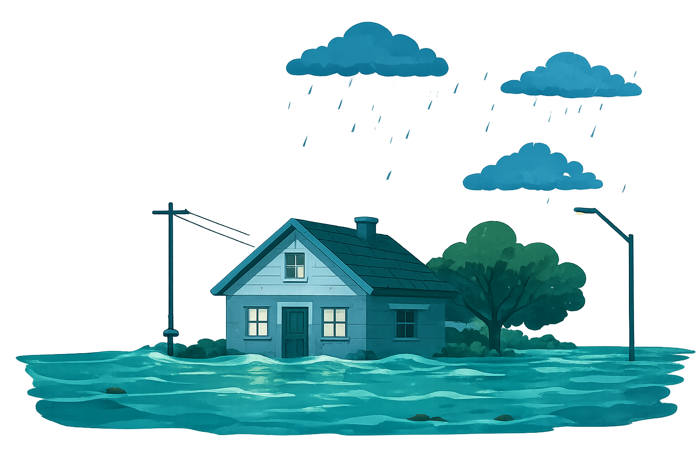
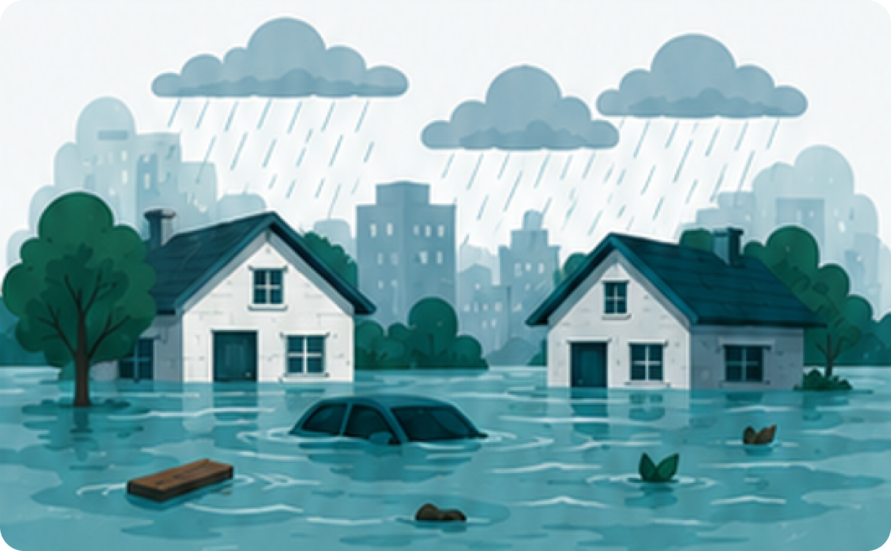

SIAGA BANJIR
Sistem Informasi dan Edukasi mitigasi Banjir
Website ini menyediakan informasi, edukasi, dan langkah mitigasi untuk meningkatkan kesiapsiagaan masyarakat terhadap banjir.

Website ini menyediakan informasi, edukasi, dan langkah mitigasi untuk meningkatkan kesiapsiagaan masyarakat terhadap banjir.

Banjir adalah genangan air yang meluap ke daratan akibat curah hujan tinggi, luapan sungai, atau drainase yang tersumbat.
Kesiapsiagaan adalah kunci untuk menghadapi banjir dengan lebih aman.
Persiapan sejak dini membantu mengurangi risiko kerugian materi dan keselamatan saat banjir terjadi.
Tindakan siaga memastikan keluarga selalu aman dan terlindungi dari bahaya banjir.
Kebersamaan dan gotong royong memperkuat komunitas dalam menghadapi dampak banjir.
Ikuti informasi dan sumber resmi dan terpercaya.
Simpan dokumen dan barang berharga di tempat aman.
Matikan aliran listrik untuk mencegah bahaya korsleting.
Evakuasi ke tempat aman sesuai arahan petugas.
Informasi lengkap tentang pengertian, penyebab, dampak, dan wilayah rawan banjir.
Selengkapnya →Panduan praktis sebelum, saat, dan setelah banjir untuk kesiapsiagaan keluarga.
Selengkapnya →Nomor penting, posko bantuan, dan instansi terkait yang siap membantu anda.
Selengkapnya →